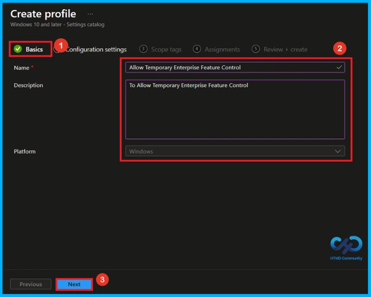
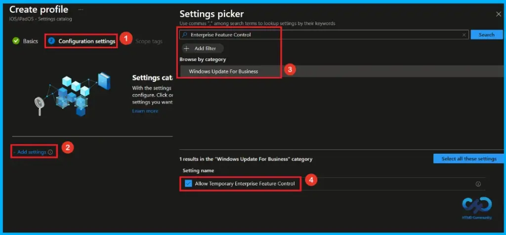
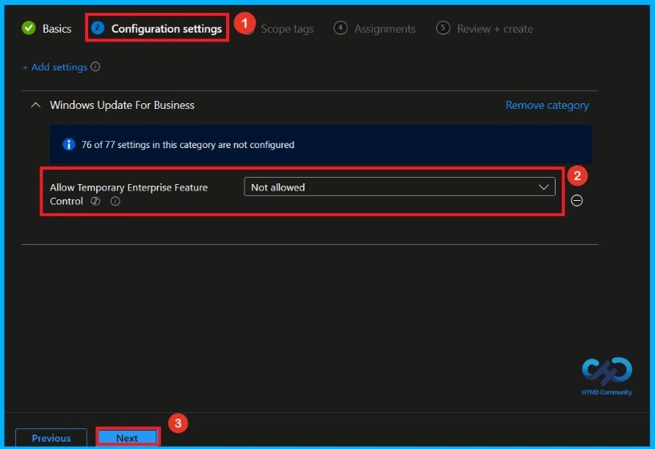
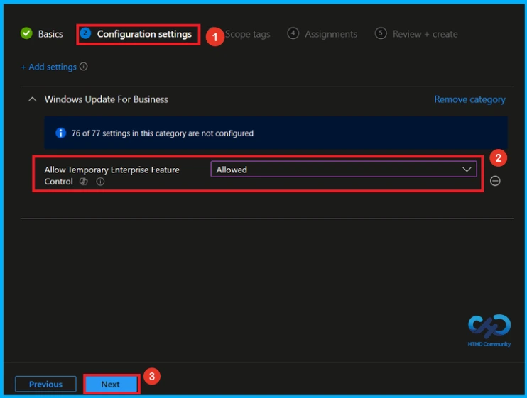
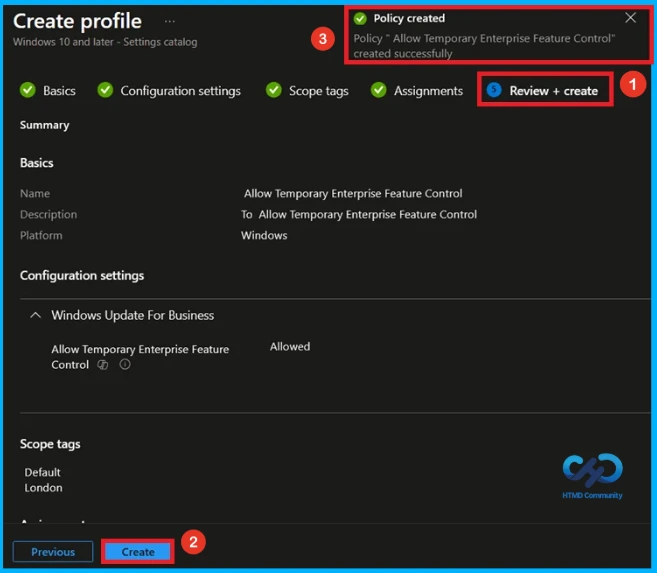
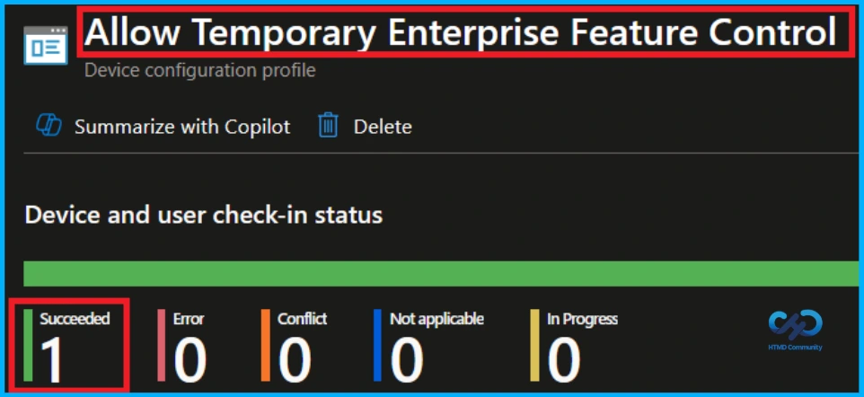
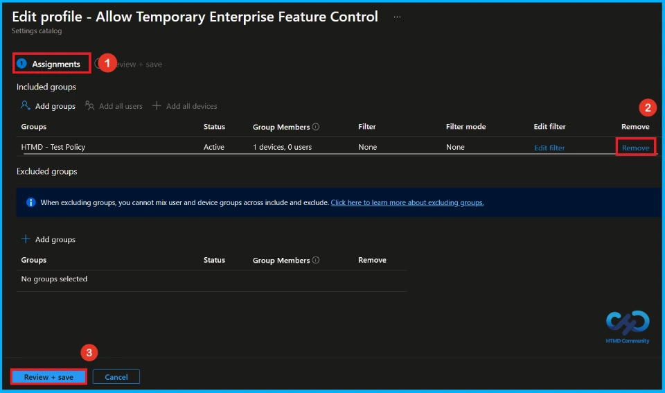
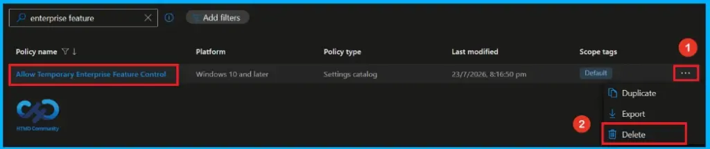

Key Takeaways
- Monthly quality updates can include new Windows features.
- Managed devices keep these new features off by default.
- Enabled policy turns on all new features from the latest monthly quality update.
- Disabled or Not Configured keeps the features off until the next annual feature update.
Hey, let’s discuss about get Latest Windows Features immediately after Quality Updates with Intune Policy. Windows sometimes introduces new features through monthly quality updates instead of waiting for the annual feature update. On devices where Windows updates are managed through policies (such as Windows Update for Business or WSUS), these new features are turned off by default.
Table of Contents
If this policy is set to Enabled, all features included in the latest installed monthly quality update will be turned on automatically. If the policy is Disabled or Not Configured, those new features will stay off until they are included in a future annual feature update.
How to Create a Policy in Intune
To create a policy, the first step that you must do is to sign in to the Microsoft Intune Admin Centre. After clicking on the Device on the left side of the screen, select Configuration and then click Create and select New Policy.

Profile Creation of Temporary Enterprise Feature Control Policy
Choose new policy to open the profile creation window of a policy. Select platform as Windows 10 and later and profile type as settings catalog. After configuring these options, click on create button to continue the policy creation.

Basic Tab of Temporary Enterprise Feature Control Policy
Enter a name for the policy. You can also add a short description to explain what the policy does. Here, Allow Temporary Enterprise Feature Control as the policy name and To Allow Temporary Enterprise Feature Control as the description. When you are done, click Next to continue.

Configure Temporary Enterprise Feature Control Policy
On the Configuration settings page, click Add settings. In the Settings picker, search Enterprise Feature Control or select the Windows Update for Business category and select Allow Temporary Enterprise Feature Control setting. After selecting the setting, add it to the profile.

Disable Temporary Enterprise Feature Control Policy
In the Configuration settings section, the Allow Temporary Enterprise Feature Control option under Windows Update for Business is set to Not allowed. This prevents devices from using temporary enterprise feature control settings or receiving temporary Windows feature changes. Click Next to continue.

Allow Temporary Enterprise Feature Control Policy
In the Configuration settings section, click the dropdown menu for Allow Temporary Enterprise Feature Control and select Allowed. This enables temporary enterprise feature control on devices, allowing them to receive and use temporary Windows feature updates when provided. Click Next to continue.

Scope Tag of Policy Creation
A scope tag in Intune is used to control visibility and access to Intune resources based on administrative roles. Scope tags are not mandatory. You can add the scope tag using the select scope tags button. Here, i select Landon as scope tag. Click Next to continue.

Assignment Tab of Temporary Enterprise Feature Control Policy
The assignments section is used to choose the users or devices that will receive the policy. Add a group by clicking on the Add group button. Here, I selected the HTMD-Test Policy group. Review the assignment settings to ensure the correct targets are included and click Next to proceed with the policy deployment.

Final Step of Temporary Enterprise Feature Control Policy Creation
Before creating the policy, review all configured settings to ensure they match all the requirements. If any changes are needed, use the previous option to make changes. after verify everything, click create to deploy the policy. Then, you can see a success message.

Device and User Check-in Status
After deploying the policy, open the assigned configuration profile in the Intune admin center and search for Allow Temporary Enterprise Feature Control Policy. Check the device and user check-in status. A Succeeded status confirms that the policy has been successfully applied to the targeted devices.

How to Remove Assigned Group from Temporary Enterprise Feature Control Policy
You can remove the assignment from the Assignment section of the policy. Open Allow Temporary Enterprise Feature Control policy from configuration tab and click on the Edit button on the assignment tab. Then click on Remove button on the section to remove the policy. click Review + Save after making the change.
For detailed information, you can refer to our previous post – Learn How to Delete or Remove App Assignment from Intune using by Step-by-Step Guide.

How to Delete Temporary Enterprise Feature Control Policy from Intune
To delete an Intune policy for security or another reasons, search for the Allow Temporary Enterprise Feature Control policy in the configuration section. After finding the policy name, click on the 3-dot menu next to it and tap the delete option.
For detailed information, you can refer to our previous post – Learn How to Delete or Remove App Assignment from Intune using by Step-by-Step Guide.

Need Further Assistance or Have Technical Questions?
Join the LinkedIn Page and Telegram group to get the latest step-by-step guides and news updates. Join our Meetup Page to participate in User group meetings. Also, Join the WhatsApp Community and WhatsApp Channel to get the latest news on Microsoft Technologies. We are there on Reddit as well.
Author
Anoop C Nair has been Microsoft MVP from 2015 onwards for 10 consecutive years! He is a Workplace Solution Architect with more than 22+ years of experience in Workplace technologies. He is also a Blogger, Speaker, and Local User Group Community leader. His primary focus is on Device Management technologies like SCCM and Intune. He writes about technologies like Intune, SCCM, Windows, Cloud PC, Windows, Entra, Microsoft Security, Career, etc